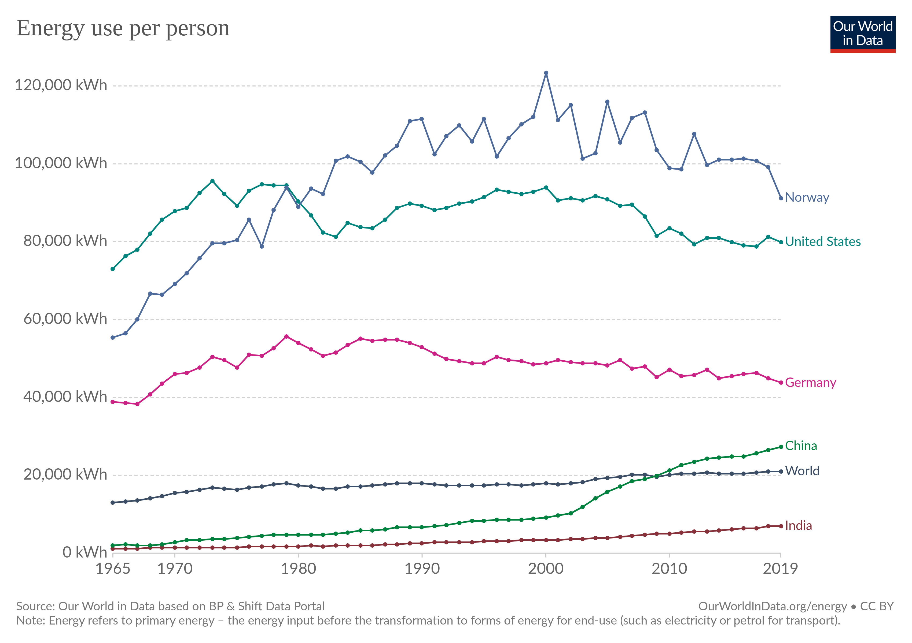
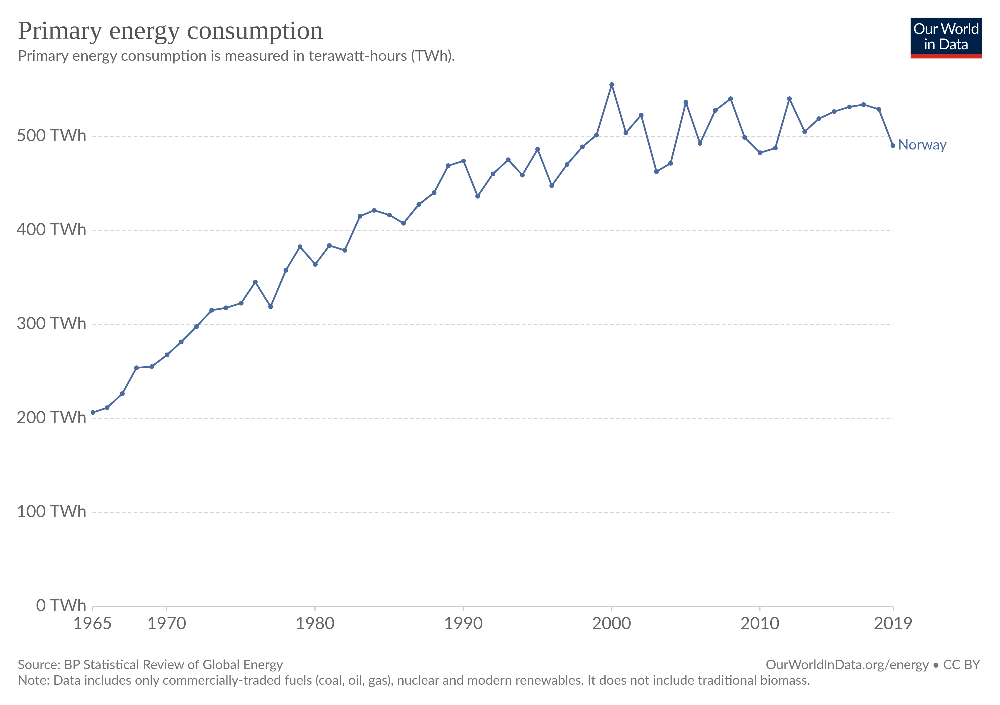
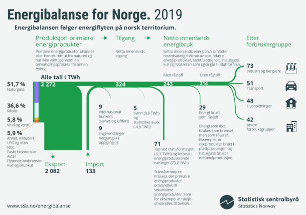
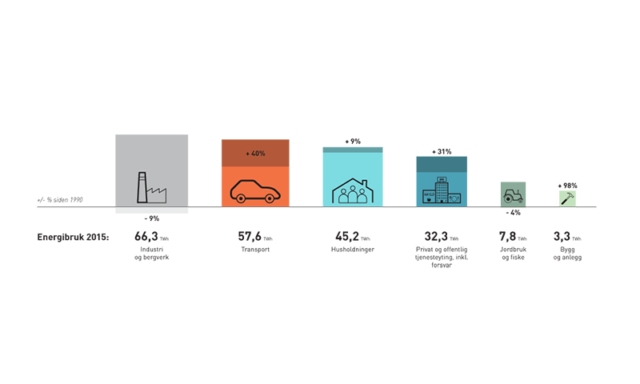

34 Norway
34.1 Energy Statistics
Energifakta.no
Access to reasonably priced hydropower has shaped energy use in Norway. Everyone has access to electricity, which is used for more purposes than in most other countries. Norway has a large energy-intensive manufacturing sector, and electricity is much more widely used to heat buildings and water than in other parts of the world. Because such a large proportion of electricity is produced from renewable sources, greenhouse gas emissions associated with stationary energy use are low in Norway.
Norway’s population has risen by nearly 1 million since 1990 - 22.3%.
1990: 4.241.473
2015: 5.188.607 Strong economic growth has resulted in a doubling of GDP since 1990. Both production of and demand for goods and services that use energy are growing steadily. However, final energy consumption has risen by only 16 %, so that the Norwegian economy has become gradually less energy-intensive.


Our World in Data 500 Twh
SB 250 Twh Source: SSB

“Energy use refers to use of primary energy before transformation to other end-use fuels, which is equal to indigenous production plus imports and stock changes, minus exports and fuels supplied to ships and aircraft engaged in international transport.”
Convertion: Kilo of oil equivalent unitjuggler
1 koe = 11.63 kWh
Worldbank/IEA/OECD: Norway 2015 : 5818 koe = 67663 kwh per capita
Our World in data : Norway 2015 : 101181 kwh per capitaStatnett: Load Duration Curve

50timer med mer enn 24 000 Mwh i forbruk i 2021. Til sammenligning var det kun to timer med tilsvarende forbruk i tre foregående år.
34.2 Energy Policy
Spetalen
Nordmenn er ikke forbrukerne, vi er eierne av norsk vannkraft. Det er essensen av det hele! Vi er enige, dette er en nasjonal skandale og flause for Norge. Investor Øystein Stray Spetalen mener politikerne kan skylde på seg selv for at strømprisene er så høye. Vi er enige! «Norge har ikke et energiproblem, vi har et politikerproblem»! – Vi har dessverre fått inn en kunnskapsløs gjeng. De som har sittet i regjering de siste ti årene har glemt det viktigste, nettopp forvaltningen av kraften vår, sier Spetalen til Klassekampen. Han mener to grep kan løse situasjonen: En skatt på 78 prosent på all kraft som eksporteres til utlandet Norge må melde seg ut av Acer, som er EU-byrået for samarbeid mellom energiregulatorer. Han mener tilknytningen til EU fratar Norge selvstyre, og han mener unionen er grunnleggende antidemokratisk. Det har Spetalen svært rett i! Det er totalt svikt i Stortinget! De har glemt hvem de jobber for!
34.2.1 Energy Policy History
Aam
I «gamle dager», fram til midten an 1970-tallet, bestemte man hvor mye vannkraft man skulle bygge ut i Norge etter prinsippet om «bestemmende år».
Da sa vi at vi skulle bygge ut så mye vannkraft at vi hadde nok kraft til innbyggerne i ni av ti år. Så fikk vi greie oss som best vi kunne i det tiende som ikke var så mye verre enn det niende. Litt sparing, m.v. og i verste fall litt rasjonering ville være tilstrekkelig for å få «endene til å møtes».
Da var det en utfordring at vi de fleste år hadde vannkraft til overs. Så lagde vi strategier for å få omsetning på overskuddet. Et viktig element var å installere varmekjeler hos store forbrukere som kunne varmes opp med både el og olje og som kunne legge om til oljefyring når det var tørre perioder. Et annet element var å selge fleksibel, billig kraft til industrien – som kunne kobles ut når det var manko på kraft. Videre knyttet vi landsdelene sammen elektrisk slik at kraftselskap som manglet kraft pga lite nedbør kunne kjøpe kraft av andre som lå i områder som hadde hatt mer nedbør. Til slutt lagde vi utenlandsforbindelser til Sverige og Danmark for å kunne utveksle kraft med utlandet.
Etter hvert lagde Samkjøringen av kraftverkene i Norge et spotmarked der kraftselskaper og industri kunne kjøpe og selge kraft av hverandre. Samkjøringen startet regionsvis fra i 1932 og ble landsomfattende i 1971. Den varte til 1991.
Filosofien i «gamle dager» i de fleste land i Europa, USA og andre land som var avhengig av å bygge ut termisk kraft, var å skape et robust, sikkert og billig kraftsystem. Derfor satset man på diversifisering – litt kullkraft, litt gasskraft, litt kjernekraft, litt oljekraft og litt vannkraft. Da hadde man en robust risikoavlastning hvis ulike råvarepriser skulle gå opp mye i pris og man kunne spille råvareleverandørene opp mot hverandre. Riktig nok var gassprisen sterkt knyttet til olje, men de andre råvareprisene var til en viss grad uavhengige av hverandre. Dette har fungert bra i «100» år fram til nå og kostnadene for kraftproduksjon har ligget på et «fornuftig» nivå.
For vannkraftlandet Norge var det meget gunstig å utvikle kraftutveksling med Europa. Norge hadde god tilgjengelighet på effekt ved at vannkraftmaskinene enkelt og raskt kunne øke sin produksjon. Videre kunne vi enkelt kjøre vannkraft stasjonene ned og kjøpe inn kraft fra EU for å lagre kjøpet i våre vannkraftmagasin.
Samspillet mellom det termiske Europa og vannkraftlandet Norge var «perfekt match». Norge kunne utnytte muligheten for rask opp og nedkjøring av vannkraftverkene kombinert med å bruke vannkraftmagasinene til korttidslager. Dette tjente vi godt på. Videre kunne vi skaffe oss rimelig termisk kraft på natt og helger i tørrår hvor vi trengte å importere kraft. EU fikk tilgang til toppeffekt på hverdagene til en billigere penge enn å produsere toppeffekten selv. Utbyggingen av kraftkabler til Danmark og Nederland var drevet av slike tanker.
Norge var det første landet til å liberalisere kraftforsyningen i 1990/91. Det var Senterpartimannen Eivind Reiten som var Olje-og energiminister 89/90 og miljøet rundt Handelshøyskolen i Bergen (blant andre Einar Hope) som var aktive pådrivere for å innføre en ny energilov som skilte ut kraftproduksjon som konkurranseutsatt virksomhet. Dette ble senere fulgt opp i Norden og i EU som har som mål å lage best mulig felles marked for kraft og gass i hele EU.
Den norske stat tjener mye på salg av dyr gass til Europa. Det at Norge har lav magasinfylling i Sør-Norge gjør at kraftprisen der blir spesielt preget av kraftprisen i Europa. Norske kraftprodusenter får godt betalet for de nedskrevne vannkraftanleggene med dagens høye priser. Vanlige borgerne i Norge må imidlertid betale den høye prisen i det felles europeiske kraftmarkedet hvor prisen på dyr gass og CO₂ er styrende nå.
Samspillet mellom det norske og nordiske kraftsystemet og EU er beskrevet blant annet i rapporten Nordic Grid Development Perspective 2021 (pdf), fra de nordiske nettselskapene (TSO’ene) og DNV-rapporten Energy Transition Norway 2021
Regjeringen har kommet borgerne i møte med krisepakken for strøm. og vil sette ned en energikommisjon.
Aam (2021) Hva i all verden skjer med kraftmarkedet?
Tamburstuen
Dette er en strukturell krise. Og den må løses med radikale strukturelle, politiske tiltak, for dette var i k k e hensikten med energiloven:
Ta kontroll over Nordpool og la Statnett og norske kraft- og nettselskap stå for omsetningen av strøm. Det er ingen mening i at et utenlandseid børs-selskap skal kunne tjene milliarder på omsetningen av norsk strøm og ta enorme utbytter ut av Norge
la brukerne kjøpe strømmen fra denne nye enheten - basert på et prinsipp om kost pluss. På denne måten får produsentene og netteierne pløyd direkte tilbake en rimelig fortjeneste som brukes for oppgraderinger av kraftverk og nett. Det er et potensiale for en vesentlig økning av produksjonen i eksisterende vannkraftverk, uten naturinngrep.
dette betyr at de såkalte strømselskapene forsvinner fra markedet
sett et krav om minimum magasinfylling hele året - og sørg for at dette etterleves. Vår magasinkapasitet utgjør 70% av vår årlige produksjon av vannkraft og er bygget opp nettopp for å lagre energi – denne kapasiteten er unik i Europa
reforhandle avtalene om utenlandskablene slik at Norge har nasjonal kontroll med hva som skal gå ut og inn av strøm
Pålegg Statnett å investere i stamnettet slik at en unngår flaskehalsene som skaper de store prisforskjellene innenlands
Dropp elektrifiseringen av sokkelen - gi oljeselskapene et lite skatteincentiv og krev at avgassene fra gassturbinene er renset innen en gitt frist
Lag beredskap - lovmessig og finansielt - for å sikre at kraftverk og nett forblir på norske hender
Bruk eierskapet i Statkraft og Statnett til å sørge for at disse to selskapene oppfyller sine oppdrag i Norge
Styrk arbeidet med reell energiøkonomisering, og start arbeidet med geoenergi/jordvarme og med bioenergi – norske skoger flyter over av biomasse
Tamburstuen 2
Trygve Tamburstuen gir her en opplysende og oppsiktsvekkende oversikt over hvordan vi er havnet i det nåværende kraftkaoset. Han gir også en helt nødvendig og presis beskrivelse av hva som gjøres for å få kontroll over kraftsituasjonen. KRONIKK Trygve Tamburstuen, styreleder i flere selskaper: GLADE DAGER I NEW YORK: Nasdaq-børsen har med sine allierte arbeidet for bygging av flest mulig grenseoverskridende strømforbindelser, fordi de med dette kontrollerer krafthandelen i Europa. De handler med alle kjente spekulasjonsobjekter, og vil selvsagt tjene mest mulig på hver transaksjon, skriver Trygve Tamburstuen.FOTO: BRYAN R. SMITH, AFP/NTB Energilovens intensjon var at brukerne kunne velge den leverandør som tilbyr lavest pris. Det store politiske feilgrepet var å gjøre strøm til en vare i et marked som ingen kontrollerer. Det var en reform ingen ba om, men et nettverk av sosialøkonomer drev fram dereguleringen, i en tid der konkurranseutsetting var det store mantraet. For å sikre en effektiv omsetning ble Statnett – tidligere Samkjøringen – satt til å drive en kraftbørs, og Statnett Marked ble etablert i 1993. Senere kom de nordiske og baltiske nettselskapene inn som eiere. Vi var interessert i å importere strøm fra naboland på kveld og natt, mens vi kunne eksportere på dagtid og utnytte magasinkapasiteten til å lagre strøm. I 2001 byttet Statnett Marked navn til NordPool, og det ble etablert flere datterselskaper. De kommersielle aktørene, inkludert Statnett, så at utenlandskabler og sammenkopling av kraftbørsene ville gjøre det nordiske kraftmarkedet integrert både fysisk og finansielt med det europeiske kraftmarkedet. Den finansielle krafthandelen omfatter handel med finansielle instrumenter som brukes som rene spekulasjonsobjekter. NordPool bygget opp en egen plattform for slik handel med kraft og CO₂-sertifikater. Og da starter børsifiseringen og den totale finansialiseringen av kraftmarkedet: I 2008 selger NordPool sin andel i kraftbørsen og mesteparten av sin øvrige virksomhet til Nasdaq OMX (Nasdaq er New York-børsen) for rundt 2.4 milliarder kroner. NordPool, som da var 50 prosent eid av Statnett, selger altså det viktige aktivum som den finansielle kraftbørsen er, uten at Stortinget behandler salget! Nasdaq OMX har helt klare ambisjoner. I dag styrer de kraftomsetningen i over 20 land i Europa. Nasdaq har to datterselskaper i Norge som nyter godt av dette: Nasdaq OMX Oslo omsatte i 2020 for 112 millioner og fikk et årsresultat på 29 millioner. Nasdaq Clearing omsatte for 195 millioner med et årsresultat på 107 millioner. Fortjenestemarginen i denne delen av krafthandelen er altså på 44 prosent. Nasdaq og deres allierte har selvsagt bevisst arbeidet for bygging av flest mulig grenseoverskridende strømforbindelser, fordi de med dette kontrollerer krafthandelen i Europa. De handler med alle kjente spekulasjonsobjekter, kort- og langsiktig, opsjoner, og vil selvsagt tjene mest mulig på hver transaksjon. Jeg omtaler ikke strømselgerne her, men en etablering av kraftbørsen er jo den mekanismen som åpnet for at 130 – i stor grad utenlandseide – strømselgere i dag operer i det norske markedet. Et ferskt eksempel er at Kintech Energy Spot, et datterselskap av et amerikansk selskap, har påført Bardu kommune et tap på 13 millioner ved å selge konsesjonskraft for kommunen! Så fullføres skandalen i 2019: da selger Statnett og partnerne 66 prosent av den fysiske kraftbørsen kalt NordPool Holding 2 AS, til den Nederland-baserte børseieren Euronext, som også eier Oslo Børs. I 2020 har Euronext et årsresultat i Norge på 575 millioner og tar ut 392 millioner i utbytte. NordPool Holding tar ut 75 millioner og TSO Holding, som eier de resterende 34 prosent av kraftbørsen, tar ut 480 millioner i utbytte – 30 prosent av dette tilfaller Statnett. NordPool Holding 2 AS eier NordPool AS og European Market Coupling Operator AS (navnet sier vel det meste). Prisen for de 66 prosent var 640,2 millioner, som må betegnes som et rent billigsalg i lys av den enorme strategiske verdien denne plattformen har. Igjen skjer salget uten at Stortinget behandler det. Sigbjørn Gjelsvik (Sp) stiller et spørsmål til statsråd Freiberg (Frp), men blir avvist og saken følges aldri opp. «Nasdaq har helt klare ambisjoner.» Fra å ha full statlig kontroll over både den fysiske og finansielle krafthandelen er det altså nå Nasdaq og Euronext – to av de største internasjonale børseierne – som kontrollerer ikke bare den norske kraftomsetningen, men også den europeiske. Og de har fått kontrollen for veldig beskjedne beløp, noe som bør rette søkelyset mot styre og daglig ledelse av Statnett i perioden. Vi er altså nå del av et fullintegrert europeisk kraftmarked. Samtidig har energipolitikken i EU slått helt feil, og utsiktene er dårlige: Europa har i overskuelig framtid lav selvforsyningsgrad på fornybar energi. Får vi ikke kontrollen over egen kraft, vil høye priser til husholdninger og industri i Norge forbli en permanent tilstand. Kontrollen kan vi få tilbake ved å: ta tilbake kraftbørsen, både den finansielle og den fysiske, og fjerne strømselgerne fra markedet reforhandle avtalene om kraftutveksling slik at vi selv kontrollerer flyten i kablene bestemme et transparent kostnadsregime for prisingen av kraft i Norge instruere Statnett til å investere i stamnettet i Norge for å fjerne flaskehalsene. Statnetts investeringer i de nye kraftkablene til Tyskland og Storbritannia er 18 milliarder. Hittil har strømmen bare gått én vei i disse kablene, og det er ingen grunn til å forvente at landene i overskuelig framtid vil kunne levere strøm til Norge – dette er altså rene eksportledninger. Vi sitter med uhyre sterke forhandlingskort: Norge dekker 25 prosent av Europas totale gassforbruk, som transporteres direkte i rør (USAs fabling nå om å redde Europas gassbehov med LNG på skip virker helt absurd). To tredeler av Norges gassreserver er ikke produsert ennå – vi er altså en langsiktig solid leverandør. Tyskland tar imot mest – 50 prosent i 2020 – mens Storbritannia tok 26 prosent. Dette er altså også de samme markedene som bare importerer norsk strøm og ikke leverer noe tilbake”.